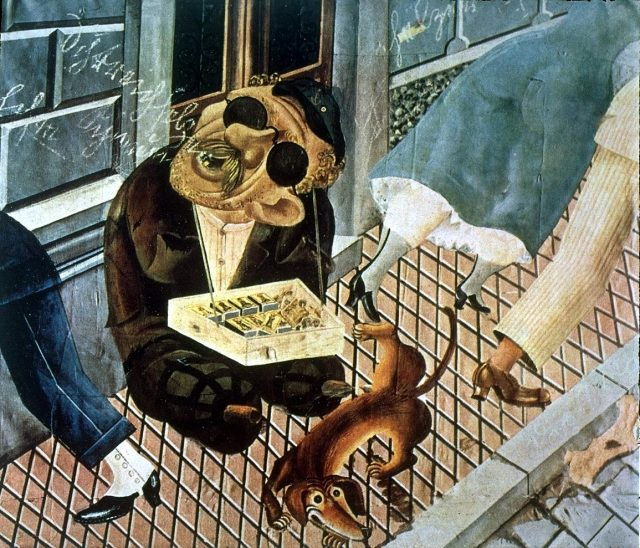

Vamos avaliar a produção cultural que emergiu no mundo entre guerras, analisando a imagem do pintor Alemão OTTOR DIX ( O vendedor de fósforo)

O vendedor de fósforos (1920), é uma obra de Otto Dix que está exposta na Alemanha, no Kunstmuseum, em Stuttgart.
Nessa pintura Dix expõe, quase fotograficamente, o descaso dos passantes diante do sofrimento de um ex-soldado cego e paralítico. A produção dessa fase do artista constitui uma espécie de crônica ácida e indignada do ambiente alemão do período, o que vale a sua prisão em 1939 e a condenação de sua obra como arte degenerada.
O pintor e gravador alemão Otto Dix (1891-1969), ao lado do pintor e desenhista, também alemão, George Grosz (1893-1959), são considerados os dois grandes nomes dessa linhagem expressionista. A obra de Dix flagra a hipocrisia e frivolidade da sociedade berlinense do pós-guerra.